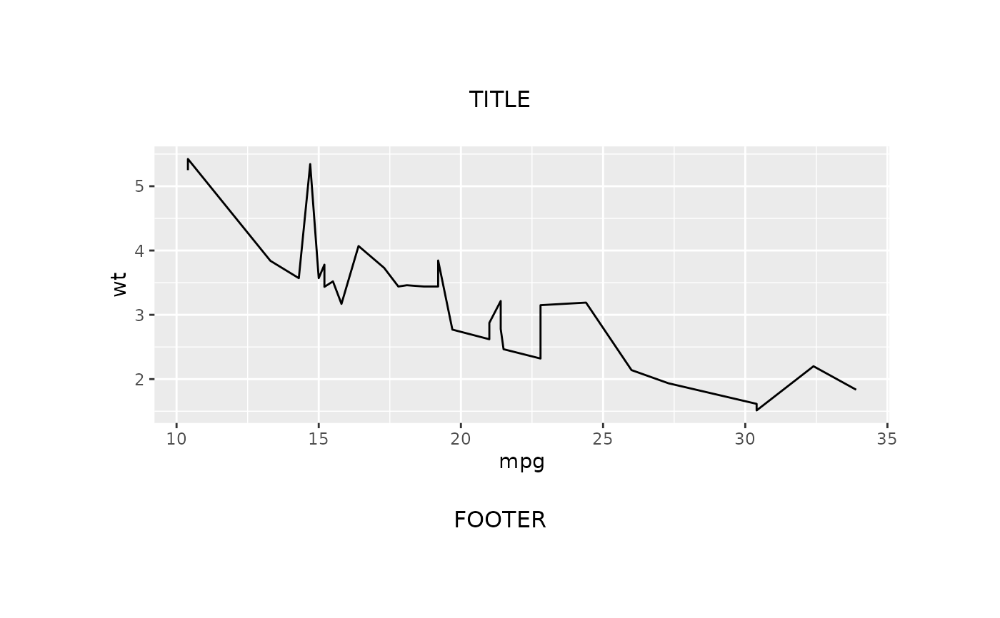
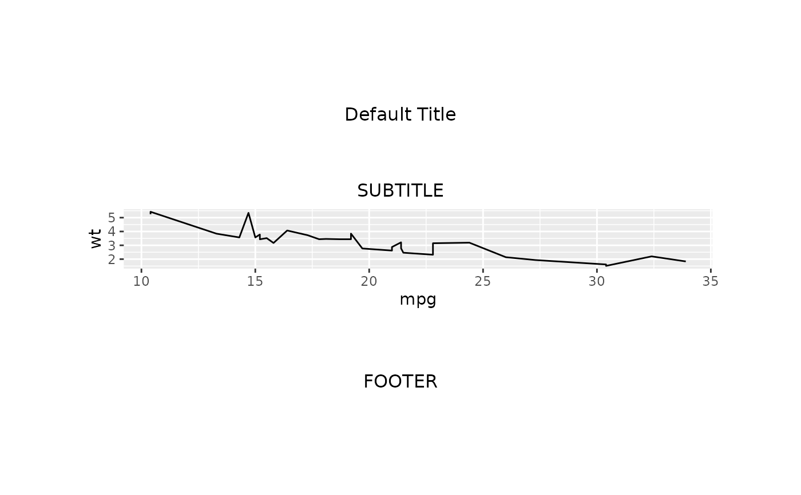

Function for creating a new instance of the gridifyLayout class.
Arguments
- nrow
An integer specifying the number of rows in the layout.
- ncol
An integer specifying the number of columns in the layout.
- heights
A call to
grid::unit()specifying the heights of the rows.- widths
A call to
grid::unit()specifying the widths of the columns.- margin
A
grid::unit()specifying the margins around the object. Must be a vector of length 4, one element for each margin, with values in order for top, right, bottom, left.- global_gpar
A call to
grid::gpar()specifying the global graphical parameters. Default isgrid::gpar().- background
A string with background colour. Default
grid::get.gpar()$fill.- adjust_height
A logical value indicating whether to automatically adjust the height of the object to make sure all of the text elements around the output do not overlap. This only applies for rows with height defined in cm, mm, inch or lines units. Default is TRUE.
- object
A call to
gridifyObjectspecifying the row and column location of the object.- cells
A call to
gridifyCellslisting out the text element cells required for the layout.
Examples
layout <- gridifyLayout(
nrow = 3L,
ncol = 1L,
heights = grid::unit(c(0.15, 0.7, 0.15), "npc"),
widths = grid::unit(1, "npc"),
margin = grid::unit(c(t = 0.1, r = 0.1, b = 0.1, l = 0.1), units = "npc"),
global_gpar = grid::gpar(),
background = grid::get.gpar()$fill,
adjust_height = FALSE,
object = gridifyObject(row = 2, col = 1),
cells = gridifyCells(
title = gridifyCell(row = 1, col = 1),
footer = gridifyCell(row = 3, col = 1)
)
)
# (to use |> version 4.1.0 of R is required, for lower versions we recommend %>% from magrittr)
library(magrittr)
gridify(
object = ggplot2::ggplot(data = mtcars, ggplot2::aes(x = mpg, y = wt)) +
ggplot2::geom_line(),
layout = layout
) %>%
set_cell("title", "TITLE") %>%
set_cell("footer", "FOOTER")
#> gridifyClass object
#> ---------------------
#> Please run `show_spec(object)` or print the layout to get more specs.
#>
#> Cells:
#> title: filled
#> footer: filled

new_layout <- function(
margin = grid::unit(c(t = 0.1, r = 0.1, b = 0.1, l = 0.1), units = "npc"),
global_gpar = grid::gpar()) {
gridifyLayout(
nrow = 4L,
ncol = 1L,
heights = grid::unit(c(3, 0.5, 1, 3), c("cm", "cm", "null", "cm")),
widths = grid::unit(1, "npc"),
global_gpar = global_gpar,
background = grid::get.gpar()$fill,
margin = margin,
adjust_height = FALSE,
object = gridifyObject(row = 3, col = 1),
cells = gridifyCells(
title = gridifyCell(row = 1, col = 1, text = "Default Title"),
subtitle = gridifyCell(row = 2, col = 1),
footer = gridifyCell(row = 4, col = 1)
)
)
}
gridify(
object = ggplot2::ggplot(data = mtcars, ggplot2::aes(x = mpg, y = wt)) +
ggplot2::geom_line(),
layout = new_layout()
) %>%
set_cell("subtitle", "SUBTITLE") %>%
set_cell("footer", "FOOTER")
#> gridifyClass object
#> ---------------------
#> Please run `show_spec(object)` or print the layout to get more specs.
#>
#> Cells:
#> title: filled
#> subtitle: filled
#> footer: filled
